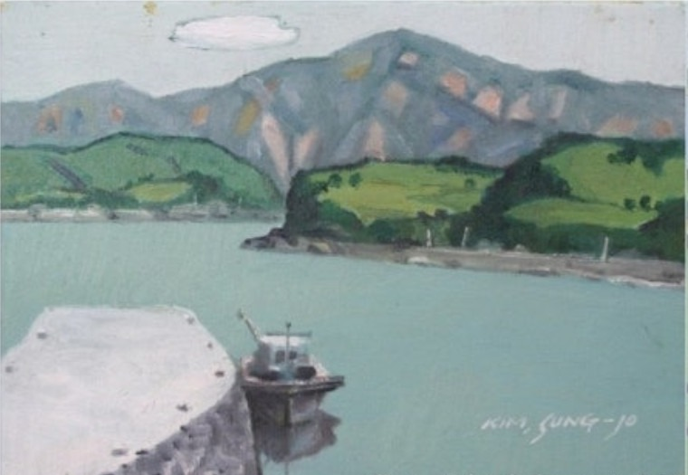
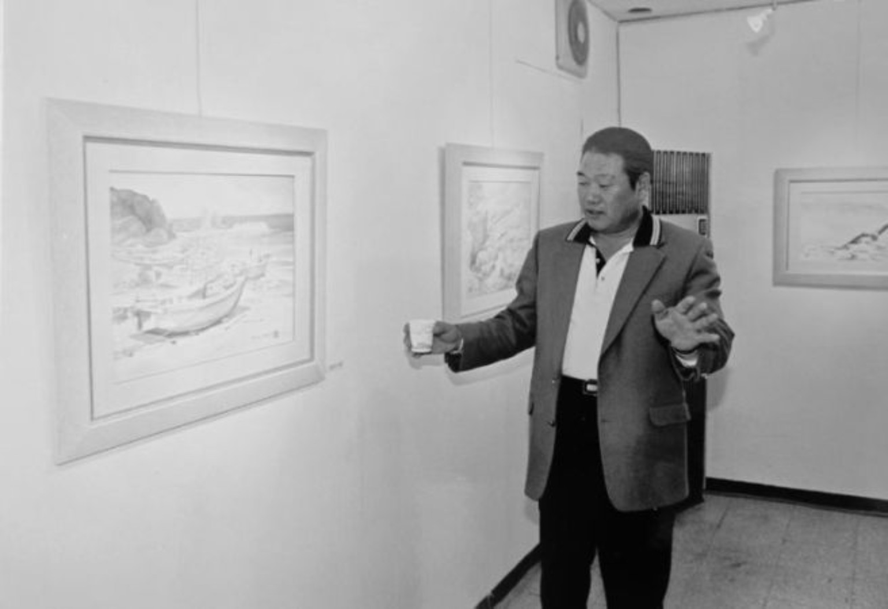
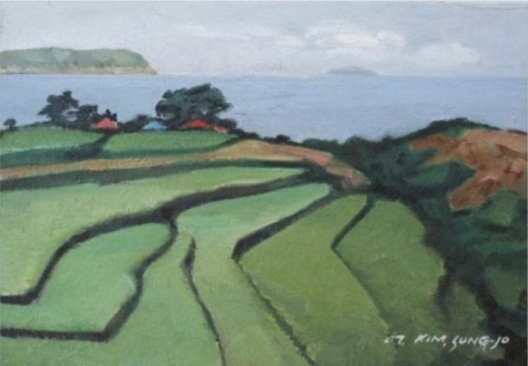
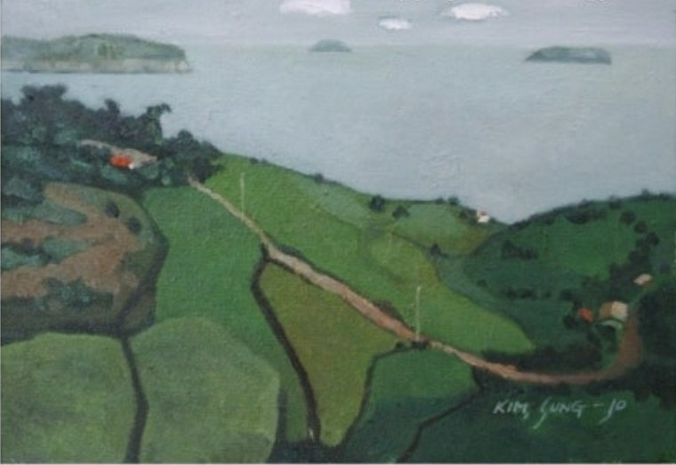
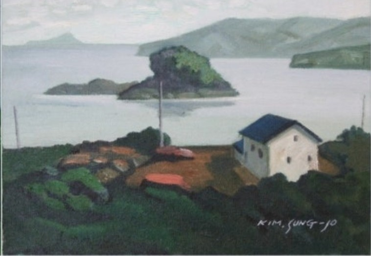

바다와 항구
바닷가의 고요한 정취
그림이 머물다 간 자리

자연의 풍경에서 유년의 기억까지, 화가가 바라본 삶의 자리를 다시 만납니다.
김성조(1949–2025) 화백의 1주기를 맞아 마련된 추모 유작전입니다. 제공된 작품에서는 바다와 산, 해안 마을과 푸른 들녘을 담아낸 풍경을 만날 수 있습니다.
학력·수상·전시 이력은 공식 약력 자료 확인 후 추가합니다.
화면에 담긴 풍경을 네 장의 작품으로 소개합니다. 아래 감상 제목은 공식 작품명이 아닌 임시 제목입니다.

바닷가의 고요한 정취

굽이치는 밭둑의 리듬

빛과 수평선의 조화

삶의 기억이 깃든 집
김성조 화백의 풍경에는 선명한 색면과 간결한 형태가 공존합니다. 푸른 바다와 녹색의 들녘은 자연을 기록하는 동시에 오래 간직한 기억을 환기합니다. 이 유작전은 한 화가가 남긴 시선과 그 안에 담긴 시간을 돌아보는 자리입니다.
전시 김성조 1주기 추모 유작전 《그림이 머물다 간 자리》
기간 2026. 12. 1.(화) ~ 12. 6.(일)
시간 10:00~19:00
오프닝 12. 1.(화) 17:00
장소 아양아트센터 전시실
주소 대구광역시 동구 효동로2길 24
문의 김병찬 010-2812-0300